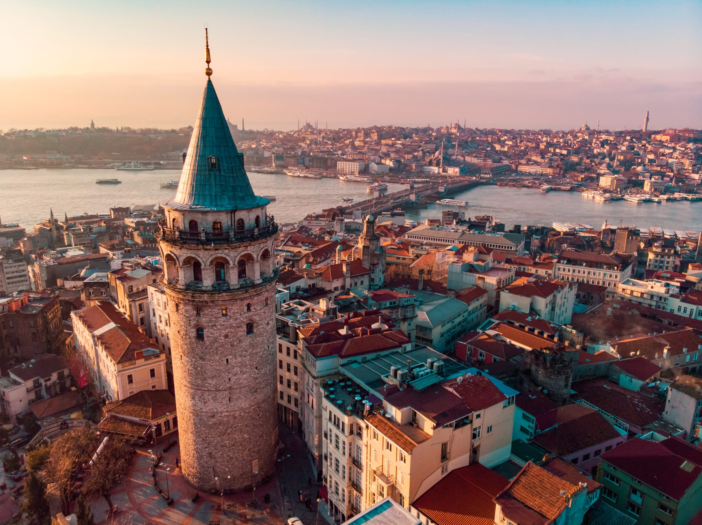
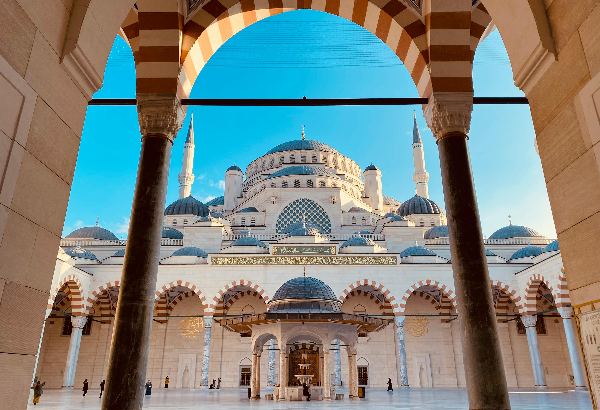

Esplora Istanbul interattivamente
Esplora Istanbul interattivamente

Nata come colonia greca di Bisanzio nel VII secolo a.C., la città divenne Costantinopoli nel 330 d.C., fulcro dell’Impero Romano d’Oriente e baluardo della cristianità per oltre un millennio. Situata sulle vitali rotte marittime che collegavano Mediterraneo e Mar Nero, crebbe tra palazzi imperiali, ippodromi e cupole bizantine che ancora si riflettono sulle acque del Corno d’Oro.
Con la conquista ottomana del 1453 guidata da Mehmet II la città entrò in una nuova era: rinominata Istanbul, si trasformò nel cuore di un impero che si estendeva su tre continenti. Moschee monumentali, bazar coperti e hammam sorsero accanto agli antichi monumenti, creando un tessuto urbano unico. Oggi Istanbul è Patrimonio UNESCO per i suoi quartieri storici e continua ad attirare viaggiatori affascinati dalla sua vocazione di crocevia fra Europa e Asia.
Conquista Ottomana, Rinascimento e Modernità

Dopo il 1453, i sultani ottomani impreziosirono la città con capolavori come la Moschea Blu e il Palazzo Topkapı, simboli di un rinascimento artistico che fuse eredità bizantine e stile islamico. I mercanti di spezie, seta e pietre preziose portarono ricchezze e culture da Venezia, Il Cairo e Samarcanda, rendendola uno dei più grandi centri commerciali del Mediterraneo.
Con la nascita della Repubblica di Turchia nel 1923 Istanbul perse lo status di capitale ma non la sua centralità culturale. Oggi grattacieli moderni svettano accanto a minareti secolari; gallerie d’arte, musei d’avanguardia come Istanbul Modern e la vivace scena dei caffè di Karaköy testimoniano una metropoli in costante dialogo fra passato e futuro, pronta ad accogliere ogni viaggiatore.